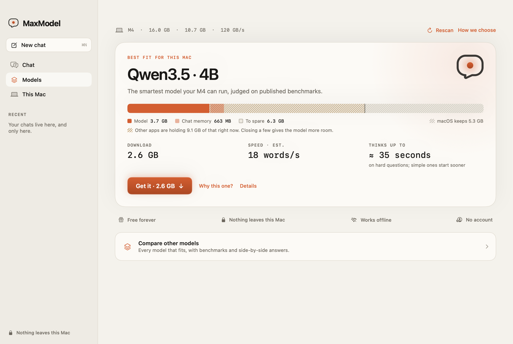
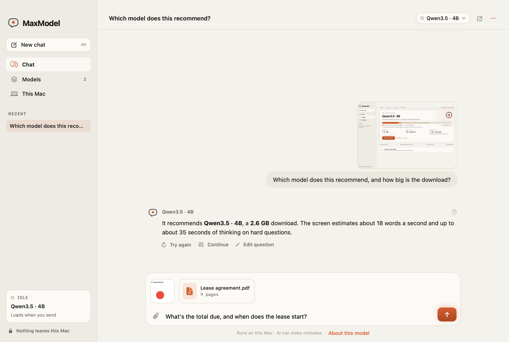

The smartest AI your Mac can run.
MaxModel reads your Mac's chip, memory, and memory speed, picks the most capable open model that runs well on it, and downloads it. Then you chat, entirely offline. No account, no subscription, no cloud.

One question, answered for your hardware.
Reads your Mac
Chip, memory, how much of it AI can use, and memory speed, which decides how fast a model can write.
Picks the smartest fit
Compares open models on published benchmarks and keeps only those that fit and still answer at a comfortable pace.
Chat privately
Ask anything, or drop in a screenshot, photo, or PDF. Every answer is generated on your Mac, online or off.
Drop in a screenshot, photo, or PDF.
Ask what an error means, what a chart shows, or what a lease says. Models that can see look at the image itself; others read the text in it, and MaxModel tells you which before you send.
- Drag in, paste, or attach up to 10 files per message.
- Scanned PDFs are read too. Long ones are trimmed to what fits, and you're told how many pages made it.
- Images and documents are read on your Mac and never uploaded.

Bigger isn't automatically smarter. Faster memory is.
Stays current, on your terms.
On its second launch, MaxModel asks whether to check for updates automatically. Say no and it never checks on its own; you can still choose Check for Updates… in the MaxModel menu. Every update is cryptographically signed and verified before it's installed.